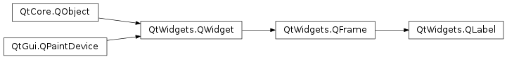

QLabel¶
Synopsis¶
Functions¶
- def
alignment() - def
buddy() - def
hasScaledContents() - def
hasSelectedText() - def
indent() - def
margin() - def
movie() - def
openExternalLinks() - def
picture() - def
pixmap() - def
selectedText() - def
selectionStart() - def
setAlignment(arg__1) - def
setBuddy(arg__1) - def
setIndent(arg__1) - def
setMargin(arg__1) - def
setOpenExternalLinks(open) - def
setScaledContents(arg__1) - def
setSelection(arg__1, arg__2) - def
setTextFormat(arg__1) - def
setTextInteractionFlags(flags) - def
setWordWrap(on) - def
text() - def
textFormat() - def
textInteractionFlags() - def
wordWrap()
Slots¶
Signals¶
- def
linkActivated(link) - def
linkHovered(link)
Detailed Description¶
The
PySide2.QtWidgets.QLabelwidget provides a text or image display.
PySide2.QtWidgets.QLabelis used for displaying text or an image. No user interaction functionality is provided. The visual appearance of the label can be configured in various ways, and it can be used for specifying a focus mnemonic key for another widget.A
PySide2.QtWidgets.QLabelcan contain any of the following content types:
Content Setting Plain text Pass a PySide2.QtCore.QStringtoPySide2.QtWidgets.QLabel.setText().Rich text Pass a PySide2.QtCore.QStringthat contains rich text toPySide2.QtWidgets.QLabel.setText().A pixmap Pass a PySide2.QtGui.QPixmaptoPySide2.QtWidgets.QLabel.setPixmap().A movie Pass a PySide2.QtGui.QMovietoPySide2.QtWidgets.QLabel.setMovie().A number Pass an int or a double to PySide2.QtWidgets.QLabel.setNum(), which converts the number to plain text.Nothing The same as an empty plain text. This is the default. Set by PySide2.QtWidgets.QLabel.clear().Warning
When passing a
PySide2.QtCore.QStringto the constructor or callingPySide2.QtWidgets.QLabel.setText(), make sure to sanitize your input, asPySide2.QtWidgets.QLabeltries to guess whether it displays the text as plain text or as rich text, a subset of HTML 4 markup. You may want to callPySide2.QtWidgets.QLabel.setTextFormat()explicitly, e.g. in case you expect the text to be in plain format but cannot control the text source (for instance when displaying data loaded from the Web).When the content is changed using any of these functions, any previous content is cleared.
By default, labels display left-aligned, vertically-centered text and images, where any tabs in the text to be displayed are
automatically expanded. However, the look of aPySide2.QtWidgets.QLabelcan be adjusted and fine-tuned in several ways.The positioning of the content within the
PySide2.QtWidgets.QLabelwidget area can be tuned withPySide2.QtWidgets.QLabel.setAlignment()andPySide2.QtWidgets.QLabel.setIndent(). Text content can also wrap lines along word boundaries withPySide2.QtWidgets.QLabel.setWordWrap(). For example, this code sets up a sunken panel with a two-line text in the bottom right corner (both lines being flush with the right side of the label):label = QLabel(self) label.setFrameStyle(QFrame.Panel | QFrame.Sunken) label.setText("first line\nsecond line") label.setAlignment(Qt.AlignBottom | Qt.AlignRight)The properties and functions
PySide2.QtWidgets.QLabelinherits fromPySide2.QtWidgets.QFramecan also be used to specify the widget frame to be used for any given label.A
PySide2.QtWidgets.QLabelis often used as a label for an interactive widget. For this usePySide2.QtWidgets.QLabelprovides a useful mechanism for adding an mnemonic (seePySide2.QtGui.QKeySequence) that will set the keyboard focus to the other widget (called thePySide2.QtWidgets.QLabel‘s “buddy”). For example:phoneEdit = QLineEdit(self) phoneLabel = QLabel("&Phone:", self) phoneLabel.setBuddy(phoneEdit)In this example, keyboard focus is transferred to the label’s buddy (the
PySide2.QtWidgets.QLineEdit) when the user presses Alt+P. If the buddy was a button (inheriting fromPySide2.QtWidgets.QAbstractButton), triggering the mnemonic would emulate a button click.
-
class
PySide2.QtWidgets.QLabel([parent=nullptr[, f=Qt.WindowFlags()]])¶ -
class
PySide2.QtWidgets.QLabel(text[, parent=nullptr[, f=Qt.WindowFlags()]]) Parameters: - f –
PySide2.QtCore.Qt.WindowFlags - text – unicode
- parent –
PySide2.QtWidgets.QWidget
Constructs an empty label.
The
parentand widget flagf, arguments are passed to thePySide2.QtWidgets.QFrameconstructor.See also
PySide2.QtWidgets.QLabel.setAlignment()PySide2.QtWidgets.QFrame.setFrameStyle()PySide2.QtWidgets.QLabel.setIndent()Constructs a label that displays the text,
text.The
parentand widget flagf, arguments are passed to thePySide2.QtWidgets.QFrameconstructor.- f –
-
PySide2.QtWidgets.QLabel.alignment()¶ Return type: PySide2.QtCore.Qt.Alignment
-
PySide2.QtWidgets.QLabel.buddy()¶ Return type: PySide2.QtWidgets.QWidgetReturns this label’s buddy, or 0 if no buddy is currently set.
See also
-
PySide2.QtWidgets.QLabel.clear()¶ Clears any label contents.
-
PySide2.QtWidgets.QLabel.hasScaledContents()¶ Return type: PySide2.QtCore.bool
-
PySide2.QtWidgets.QLabel.hasSelectedText()¶ Return type: PySide2.QtCore.bool
-
PySide2.QtWidgets.QLabel.indent()¶ Return type: PySide2.QtCore.intSee also
-
PySide2.QtWidgets.QLabel.linkActivated(link)¶ Parameters: link – unicode
-
PySide2.QtWidgets.QLabel.linkHovered(link)¶ Parameters: link – unicode
-
PySide2.QtWidgets.QLabel.margin()¶ Return type: PySide2.QtCore.intSee also
-
PySide2.QtWidgets.QLabel.movie()¶ Return type: PySide2.QtGui.QMovieReturns a pointer to the label’s movie, or 0 if no movie has been set.
See also
-
PySide2.QtWidgets.QLabel.openExternalLinks()¶ Return type: PySide2.QtCore.bool
-
PySide2.QtWidgets.QLabel.picture()¶ Return type: PySide2.QtGui.QPictureReturns the label’s picture or 0 if the label doesn’t have a picture.
-
PySide2.QtWidgets.QLabel.pixmap()¶ Return type: PySide2.QtGui.QPixmapSee also
-
PySide2.QtWidgets.QLabel.selectedText()¶ Return type: unicode
-
PySide2.QtWidgets.QLabel.selectionStart()¶ Return type: PySide2.QtCore.intreturns the index of the first selected character in the label or -1 if no text is selected.
Note
The
PySide2.QtWidgets.QLabel.textInteractionFlags()set on the label need to include either TextSelectableByMouse or TextSelectableByKeyboard.
-
PySide2.QtWidgets.QLabel.setAlignment(arg__1)¶ Parameters: arg__1 – PySide2.QtCore.Qt.AlignmentSee also
-
PySide2.QtWidgets.QLabel.setBuddy(arg__1)¶ Parameters: arg__1 – PySide2.QtWidgets.QWidgetSets this label’s buddy to
buddy.When the user presses the shortcut key indicated by this label, the keyboard focus is transferred to the label’s buddy widget.
The buddy mechanism is only available for QLabels that contain text in which one character is prefixed with an ampersand, ‘&’. This character is set as the shortcut key. See the
QKeySequence.mnemonic()documentation for details (to display an actual ampersand, use ‘&&’).In a dialog, you might create two data entry widgets and a label for each, and set up the geometry layout so each label is just to the left of its data entry widget (its “buddy”), for example:
nameEd = QLineEdit(self) nameLb = QLabel("&Name:", self) nameLb.setBuddy(nameEd) phoneEd = QLineEdit(self) phoneLb = QLabel("&Phone:", self) phoneLb.setBuddy(phoneEd) # (layout setup not shown)
With the code above, the focus jumps to the Name field when the user presses Alt+N, and to the Phone field when the user presses Alt+P.
To unset a previously set buddy, call this function with
buddyset to 0.
-
PySide2.QtWidgets.QLabel.setIndent(arg__1)¶ Parameters: arg__1 – PySide2.QtCore.intSee also
-
PySide2.QtWidgets.QLabel.setMargin(arg__1)¶ Parameters: arg__1 – PySide2.QtCore.intSee also
-
PySide2.QtWidgets.QLabel.setMovie(movie)¶ Parameters: movie – PySide2.QtGui.QMovieSets the label contents to
movie. Any previous content is cleared. The label does NOT take ownership of the movie.The buddy shortcut, if any, is disabled.
-
PySide2.QtWidgets.QLabel.setNum(arg__1)¶ Parameters: arg__1 – PySide2.QtCore.doubleThis is an overloaded function.
Sets the label contents to plain text containing the textual representation of double
num. Any previous content is cleared. Does nothing if the double’s string representation is the same as the current contents of the label.The buddy shortcut, if any, is disabled.
See also
PySide2.QtWidgets.QLabel.setText()QString.setNum()PySide2.QtWidgets.QLabel.setBuddy()
-
PySide2.QtWidgets.QLabel.setNum(arg__1) Parameters: arg__1 – PySide2.QtCore.intSets the label contents to plain text containing the textual representation of integer
num. Any previous content is cleared. Does nothing if the integer’s string representation is the same as the current contents of the label.The buddy shortcut, if any, is disabled.
See also
PySide2.QtWidgets.QLabel.setText()QString.setNum()PySide2.QtWidgets.QLabel.setBuddy()
-
PySide2.QtWidgets.QLabel.setOpenExternalLinks(open)¶ Parameters: open – PySide2.QtCore.bool
-
PySide2.QtWidgets.QLabel.setPicture(arg__1)¶ Parameters: arg__1 – PySide2.QtGui.QPictureSets the label contents to
picture. Any previous content is cleared.The buddy shortcut, if any, is disabled.
-
PySide2.QtWidgets.QLabel.setPixmap(arg__1)¶ Parameters: arg__1 – PySide2.QtGui.QPixmapSee also
-
PySide2.QtWidgets.QLabel.setScaledContents(arg__1)¶ Parameters: arg__1 – PySide2.QtCore.bool
-
PySide2.QtWidgets.QLabel.setSelection(arg__1, arg__2)¶ Parameters: - arg__1 –
PySide2.QtCore.int - arg__2 –
PySide2.QtCore.int
Selects text from position
startand forlengthcharacters.Note
The
PySide2.QtWidgets.QLabel.textInteractionFlags()set on the label need to include either TextSelectableByMouse or TextSelectableByKeyboard.- arg__1 –
-
PySide2.QtWidgets.QLabel.setText(arg__1)¶ Parameters: arg__1 – unicode See also
-
PySide2.QtWidgets.QLabel.setTextFormat(arg__1)¶ Parameters: arg__1 – PySide2.QtCore.Qt.TextFormat
-
PySide2.QtWidgets.QLabel.setTextInteractionFlags(flags)¶ Parameters: flags – PySide2.QtCore.Qt.TextInteractionFlags
-
PySide2.QtWidgets.QLabel.setWordWrap(on)¶ Parameters: on – PySide2.QtCore.boolSee also
-
PySide2.QtWidgets.QLabel.text()¶ Return type: unicode See also
-
PySide2.QtWidgets.QLabel.textFormat()¶ Return type: PySide2.QtCore.Qt.TextFormat
-
PySide2.QtWidgets.QLabel.textInteractionFlags()¶ Return type: PySide2.QtCore.Qt.TextInteractionFlags
-
PySide2.QtWidgets.QLabel.wordWrap()¶ Return type: PySide2.QtCore.bool
© 2018 The Qt Company Ltd. Documentation contributions included herein are the copyrights of their respective owners. The documentation provided herein is licensed under the terms of the GNU Free Documentation License version 1.3 as published by the Free Software Foundation. Qt and respective logos are trademarks of The Qt Company Ltd. in Finland and/or other countries worldwide. All other trademarks are property of their respective owners.